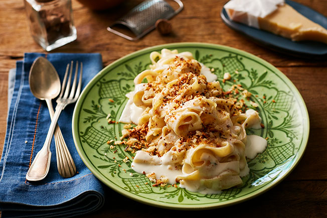

Macarrão ao molho branco

Macarrão ao molho branco
Receita para fazer um macarrão ao molho branco maravilhoso e rápido. Super prática e deliciosa. A família inteira vai amar.
Ingredientes
- 2 xícaras de leite frio.
- 2 colheres (sopa) de azeite ou manteiga.
- 2 dentes de alho amassado.
- 1/2 cebola média picada.
- 2 colheres (sopa) de farinha de trigo.
- 3 colheres (sopa) de creme de leite.
- 1 pitada de noz moscada.
- Sal a gosto.
Instruções
- Derreter a manteiga.
- Refogar alho e cebola na manteiga derretida.
- Adicionar lentamente o leite misturado com a farinha.
- Mexer constantemente para não queimar até engrossar.
- Verificar se a consistência está do seu gosto, caso precise engrossar adicione mais farinha.
- Derramar no macarrão e misturar para espalhar uniformemente.